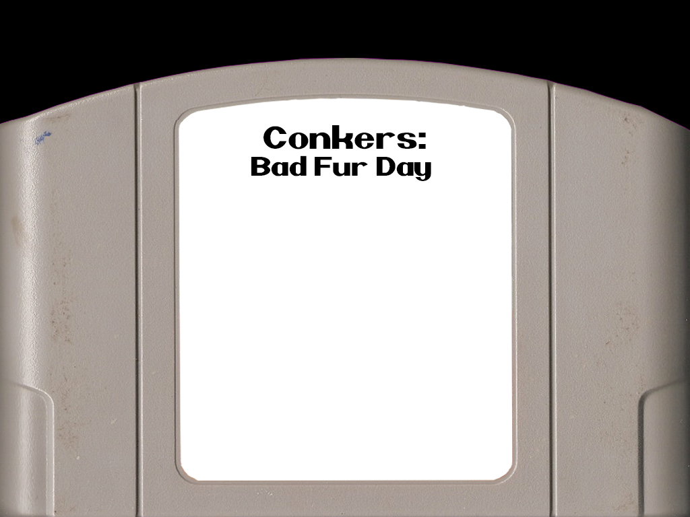

Conker's Bad Fur Day is a platformer video game developed by Rare and released for the Nintendo 64 console in 2001. As part of the Conker series, the game follows the story of Conker the Squirrel; a greedy, heavy-drinking red squirrel who attempts to return home to his girlfriend.